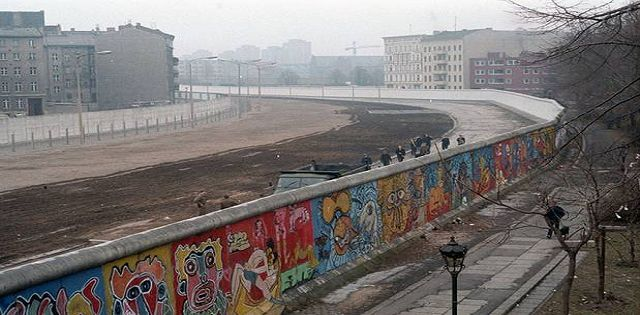

- Great Britain
- USA
- France
Index
|
| When Germany was split between the Allied Powers after WWII, the USSR took the Eastern portion of Germany while the Western Powers split up the Western portion. The USSR, over time, started to become less of an ally and more of a threat. In 1949, the North Atlantic Treaty Organisation (NATO) was formed to unify the West again against a new enemy: the USSR. As this escalated, rocket-powered ballistic nuclear weapons became more powerful a threat. This escalated when, in retaliation of marican nuclear weapons being placed in Turkey, USSR leader Nikita Khruschev placed similar nuclear weapons in Cuba.This led to a 14-day scare where everyone thought that the war would go "hot". |
Western Powers:
|
|  |
|
Former
Index |